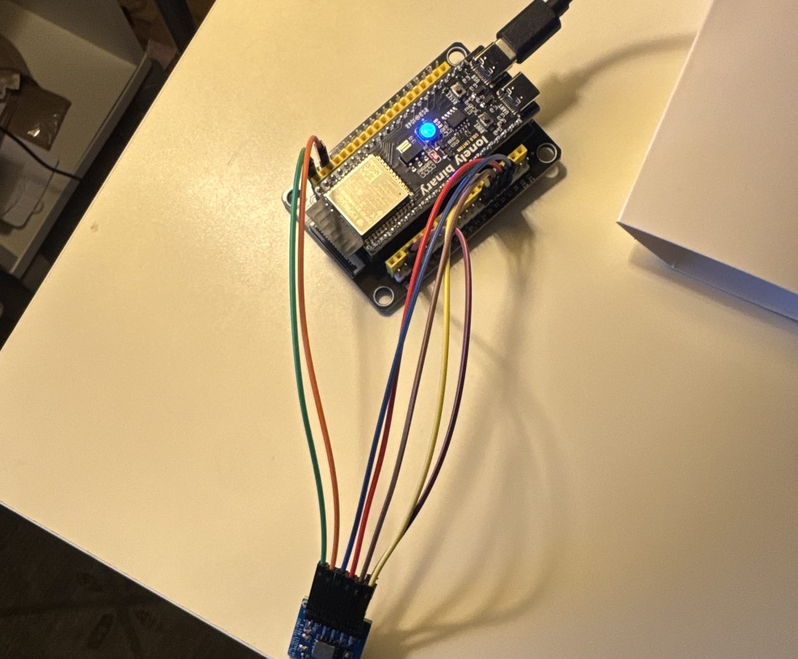
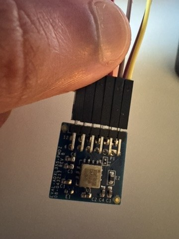

Hardware & build
The device
Introduce the hardware: what each part does, and why you chose a MEMS accelerometer over a geophone or seismometer.



Parts
| Part | What it is | Role |
|---|---|---|
| ADXL355 (EVAL-ADXL355-PMDZ) | 3-axis, low-noise MEMS accelerometer | Senses ground motion |
| ESP32-S3 (WROOM-1-N16R8 class) | Dual-core Xtensa LX7 microcontroller, 512 KB internal SRAM | Runs filtering and the neural network on the device |
| Jumper wires | SPI bus plus one interrupt line | Connect the sensor to the board |
Add anything missing (power, enclosure, mount) and roughly what the whole build costs.
Wiring
| Signal | ESP32-S3 GPIO |
|---|---|
| CS | 10 |
| MOSI | 11 |
| SCLK | 12 |
| MISO | 13 |
| INT1 (sensor P1 pin 7) | 4 |
From firmware/adxl355_capture/main/capture.c.
Bench tests
| Test | Date | Outcome |
|---|---|---|
| Bring-up gate: sensor identified over SPI | 30 Aug 2026 | passed 18/18 reads |
| H-2: gravity, all six orientations | 30 Aug 2026 | passed |
| H-1: noise floor, 1 h at rest on foam | 5 Sep 2026 | Recorded: see figure |
For each test, say what it checks and why it has to pass before the next step. Explain why the mount matters, too.